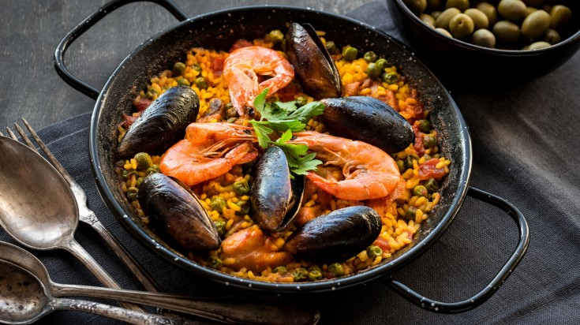
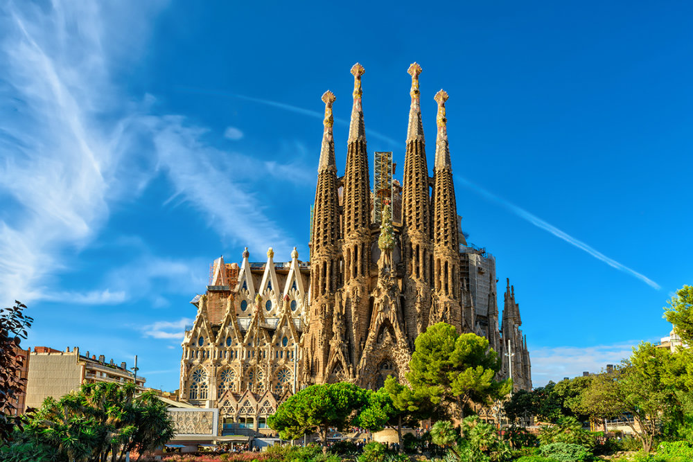

SPAINISH PAELLA
The
Paella comes from the beautiful city of Valencia. Its a Spanish rice
dish that uses a distinct type of rounded rice.
Paella de marisco, or seafood paella,
is the most common variation. Paella can be traced back to the 10th century.

SPAINISH MONUMENTS
The Sagrada Familia is an under construction church in the Example
district of Barcelona, Catalonia, Spain.
Its is the largest unfinished Catholic
Church in the world. Designed by architecture Antoni Gaudi(1852-1926).